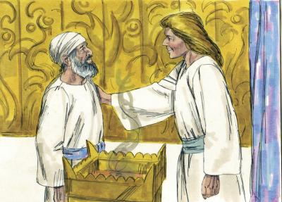
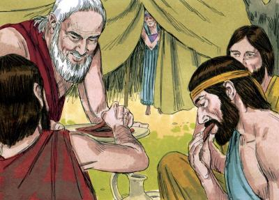
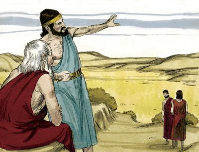
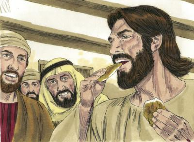
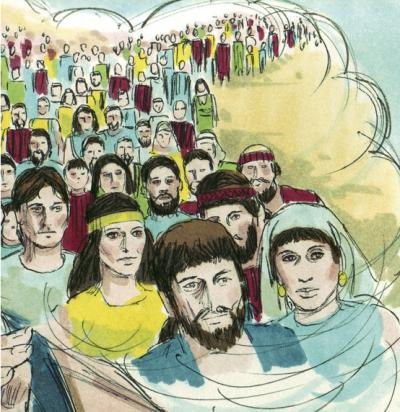
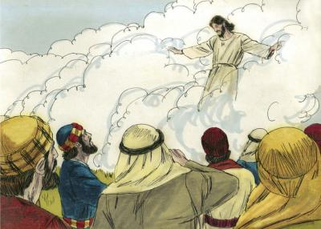

Está escrito: "Toda carne verá la salvación de Dios." | |||
| |||
|
Esta recopilación de versículos es una invitación a estudiar la Biblia, la verdadera biblia, la original, la escrita en hebreo. Y cuando esto no sea posible entonces estudiar su primera traducción al griego. https://toda-carne.github.io. | |||
|
Vocablos clave: YHWH DIOS CIELO EJERCITOS ANGEL SEPULCRO LEVANTAR TODOS FUEGO AMOR JESUS VIDA ALMA VERDAD | |||
(Κυρίου) G2962 (יהוה) H3068 יהוה | |||
| כֹּֽה־אָמַ֨ר יְהוָ֧ה מֶֽלֶךְ־יִשְׂרָאֵ֛ל וְגֹאֲלֹ֖ו יְהוָ֣ה צְבָאֹ֑ות אֲנִ֤י רִאשֹׁון֙ וַאֲנִ֣י אַחֲרֹ֔ון וּמִבַּלְעָדַ֖י אֵ֥ין אֱלֹהִֽים׃ | ישעיה 6-44 | ||
(Θεός) G2316 (אֱלֹהִֽים) H430 אֱלֹהִֽים | |||
| בְּרֵאשִׁ֖ית בָּרָ֣א אֱלֹהִ֑ים אֵ֥ת הַשָּׁמַ֖יִם וְאֵ֥ת הָאָֽרֶץ׃ | בְּרֵאשִׁ֖ית 1-1 | ||
(ἐπουράνιος) G2032 (οὐρανός) G3772 (שָׁמַיִם) H8064 שָׁמַיִם | |||
| וַיַּ֣עַשׂ אֱלֹהִים֮ אֶת־הָרָקִיעַ֒ וַיַּבְדֵּ֗ל בֵּ֤ין הַמַּ֙יִם֙ אֲשֶׁר֙ מִתַּ֣חַת לָרָקִ֔יעַ וּבֵ֣ין הַמַּ֔יִם אֲשֶׁ֖ר מֵעַ֣ל לָרָקִ֑יעַ וַֽיְהִי־כֵֽן׃ | בְּרֵאשִׁ֖ית 7-1 | ||
| וַיִּקְרָ֧א אֱלֹהִ֛ים לָֽרָקִ֖יעַ שָׁמָ֑יִם וַֽיְהִי־עֶ֥רֶב וַֽיְהִי־בֹ֖קֶר יֹ֥ום שֵׁנִֽי׃ פ | בְּרֵאשִׁ֖ית 8-1 | ||
| וַיְכֻלּ֛וּ הַשָּׁמַ֥יִם וְהָאָ֖רֶץ וְכָל־צְבָאָֽם׃ | בְּרֵאשִׁ֖ית 1-2 | ||
(δύναμις) G1411 (צָבָא) H6635 (השָׁמַיִם) צָבָא | |||
| (c)#1 | |||
| וּפֶן־תִּשָּׂ֨א עֵינֶ֜יךָ הַשָּׁמַ֗יְמָה וְֽ֠רָאִיתָ אֶת־הַשֶּׁ֨מֶשׁ וְאֶת־הַיָּרֵ֜חַ וְאֶת־הַכֹּֽוכָבִ֗ים כֹּ֚ל צְבָ֣א הַשָּׁמַ֔יִם וְנִדַּחְתָּ֛ וְהִשְׁתַּחֲוִ֥יתָ לָהֶ֖ם וַעֲבַדְתָּ֑ם אֲשֶׁ֨ר חָלַ֜ק יְהוָ֤ה אֱלֹהֶ֙יךָ֙ אֹתָ֔ם לְכֹל֙ הָֽעַמִּ֔ים תַּ֖חַת כָּל־הַשָּׁמָֽיִם׃ | דברים 19-4 | ||
| וַיֵּ֗לֶךְ וַֽיַּעֲבֹד֙ אֱלֹהִ֣ים אֲחֵרִ֔ים וַיִּשְׁתַּ֖חוּ לָהֶ֑ם וְלַשֶּׁ֣מֶשׁ ׀ אֹ֣ו לַיָּרֵ֗חַ אֹ֛ו לְכָל־צְבָ֥א הַשָּׁמַ֖יִם אֲשֶׁ֥ר לֹא־צִוִּֽיתִי׃ | דברים 3-17 | ||
| וַיֹּ֕אמֶר לָכֵ֖ן שְׁמַ֣ע דְּבַר־יְהוָ֑ה רָאִ֤יתִי אֶת־יְהוָה֙ יֹשֵׁ֣ב עַל־כִּסְאֹ֔ו וְכָל־צְבָ֤א הַשָּׁמַ֙יִם֙ עֹמֵ֣ד עָלָ֔יו מִימִינֹ֖ו וּמִשְּׂמֹאלֹֽו׃ | מלכים א 19-22 | ||
| וַיִּתְפַּלֵּ֤ל אֱלִישָׁע֙ וַיֹּאמַ֔ר יְהוָ֕ה פְּקַח־נָ֥א אֶת־עֵינָ֖יו וְיִרְאֶ֑ה וַיִּפְקַ֤ח יְהוָה֙ אֶת־עֵינֵ֣י הַנַּ֔עַר וַיַּ֗רְא וְהִנֵּ֨ה הָהָ֜ר מָלֵ֨א סוּסִ֥ים וְרֶ֛כֶב אֵ֖שׁ סְבִיבֹ֥ת אֱלִישָֽׁע׃ | מלכים ב 17-6 | ||
| הַֽלְל֥וּהוּ כָל־מַלְאָכָ֑יו הַֽ֝לְל֗וּהוּ כָּל־ [צְבָאֹו כ] (צְבָאָֽיו׃ ק) | תהלים 2-148 | ||
| וַיֹּ֣אמֶר ׀ לֹ֗א כִּ֛י אֲנִ֥י(1) שַׂר־צְבָֽא־יְהוָ֖ה עַתָּ֣ה בָ֑אתִי וַיִּפֹּל֩ יְהֹושֻׁ֨עַ אֶל־פָּנָ֥יו אַ֙רְצָה֙ וַיִּשְׁתָּ֔חוּ וַיֹּ֣אמֶר לֹ֔ו מָ֥ה אֲדֹנִ֖י מְדַבֵּ֥ר אֶל־עַבְדֹּֽו׃ | יהושע 14-5 | ||
(ἰσάγγελος) G2465 (ἄγγελος) G32 (מַלְאָך) H4397 מַלְאָך | |||
| (c)#1 (c)#1 | |||
| וַֽיִּמְצָאָ֞הּ מַלְאַ֧ךְ יְהוָ֛ה עַל־עֵ֥ין הַמַּ֖יִם בַּמִּדְבָּ֑ר עַל־הָעַ֖יִן בְּדֶ֥רֶךְ שֽׁוּר׃ | בְּרֵאשִׁ֖ית 7-16 | ||
| וַיֹּאמַ֗ר הָגָ֞ר שִׁפְחַ֥ת שָׂרַ֛י אֵֽי־מִזֶּ֥ה בָ֖את וְאָ֣נָה תֵלֵ֑כִי וַתֹּ֕אמֶר מִפְּנֵי֙ שָׂרַ֣י גְּבִרְתִּ֔י אָנֹכִ֖י בֹּרַֽחַת׃ | בְּרֵאשִׁ֖ית 8-16 | ||
| וַתִּקְרָ֤א שֵׁם־יְהוָה֙ הַדֹּבֵ֣ר אֵלֶ֔יהָ אַתָּ֖ה אֵ֣ל רֳאִ֑י כִּ֣י אָֽמְרָ֗ה הֲגַ֥ם הֲלֹ֛ם רָאִ֖יתִי אַחֲרֵ֥י רֹאִֽי׃ | בְּרֵאשִׁ֖ית 13-16 | ||
| וַיֵּרָ֤א אֵלָיו֙ יְהוָ֔ה בְּאֵלֹנֵ֖י מַמְרֵ֑א וְה֛וּא יֹשֵׁ֥ב פֶּֽתַח־הָאֹ֖הֶל כְּחֹ֥ם הַיֹּֽום׃ | בְּרֵאשִׁ֖ית 1-18 | ||
| וַיִּשָּׂ֤א עֵינָיו֙ וַיַּ֔רְא וְהִנֵּה֙ שְׁלֹשָׁ֣ה אֲנָשִׁ֔ים[1][2] נִצָּבִ֖ים עָלָ֑יו וַיַּ֗רְא וַיָּ֤רָץ לִקְרָאתָם֙ מִפֶּ֣תַח הָאֹ֔הֶל וַיִּשְׁתַּ֖חוּ אָֽרְצָה׃ | בְּרֵאשִׁ֖ית 2-18 | ||
| יֻקַּֽח־נָ֣א מְעַט־מַ֔יִם וְרַחֲצ֖וּ רַגְלֵיכֶ֑ם וְהִֽשָּׁעֲנ֖וּ תַּ֥חַת הָעֵֽץ׃ | בְּרֵאשִׁ֖ית 4-18 | ||
| (c)#1 | |||
| וְאֶקְחָ֨ה פַת־לֶ֜חֶם{1} וְסַעֲד֤וּ לִבְּכֶם֙ אַחַ֣ר תַּעֲבֹ֔רוּ כִּֽי־עַל־כֵּ֥ן עֲבַרְתֶּ֖ם עַֽל־עַבְדְּכֶ֑ם וַיֹּ֣אמְר֔וּ[1][2] כֵּ֥ן תַּעֲשֶׂ֖ה כַּאֲשֶׁ֥ר דִּבַּֽרְתָּ׃ | בְּרֵאשִׁ֖ית 5-18 | ||
| וַיָּקֻ֤מוּ מִשָּׁם֙ הָֽאֲנָשִׁ֔ים[1][2] וַיַּשְׁקִ֖פוּ עַל־פְּנֵ֣י סְדֹ֑ם וְאַ֨בְרָהָ֔ם הֹלֵ֥ךְ{1} עִמָּ֖ם לְשַׁלְּחָֽם[1][2]׃ | בְּרֵאשִׁ֖ית 16-18 | ||
| וַיִּפְנ֤וּ מִשָּׁם֙ הָֽאֲנָשִׁ֔ים[1][2] וַיֵּלְכ֖וּ סְדֹ֑מָה וְאַ֨בְרָהָ֔ם עֹודֶ֥נּוּ עֹמֵ֖ד לִפְנֵ֥י יְהוָֽה׃ | בְּרֵאשִׁ֖ית 22-18 | ||
| (c)#1 | |||
| וַ֠יָּבֹאוּ שְׁנֵ֨י הַמַּלְאָכִ֤ים סְדֹ֙מָה֙ בָּעֶ֔רֶב וְלֹ֖וט יֹשֵׁ֣ב בְּשַֽׁעַר־סְדֹ֑ם וַיַּרְא־לֹוט֙ וַיָּ֣קָם לִקְרָאתָ֔ם וַיִּשְׁתַּ֥חוּ אַפַּ֖יִם אָֽרְצָה׃ | בְּרֵאשִׁ֖ית 1-19 | ||
| וַיִּוָּתֵ֥ר יַעֲקֹ֖ב לְבַדֹּ֑ו וַיֵּאָבֵ֥ק{1} אִישׁ֙ עִמֹּ֔ו עַ֖ד עֲלֹ֥ות הַשָּֽׁחַר׃ | בְּרֵאשִׁ֖ית 24-32 | ||
| (c)#1 | |||
| וַיֹּ֗אמֶר לֹ֤א יַעֲקֹב֙ יֵאָמֵ֥ר עֹוד֙ שִׁמְךָ֔ כִּ֖י אִם־יִשְׂרָאֵ֑ל כִּֽי־שָׂרִ֧יתָ עִם־אֱלֹהִ֛ים וְעִם־אֲנָשִׁ֖ים וַתּוּכָֽל׃ | בְּרֵאשִׁ֖ית 28-32 | ||
| וַיְגַ֣ל יְהוָה֮ אֶת־עֵינֵ֣י בִלְעָם֒ וַיַּ֞רְא אֶת־מַלְאַ֤ךְ יְהוָה֙ נִצָּ֣ב בַּדֶּ֔רֶךְ וְחַרְבֹּ֥ו שְׁלֻפָ֖ה בְּיָדֹ֑ו וַיִּקֹּ֥ד וַיִּשְׁתַּ֖חוּ לְאַפָּֽיו׃ | במדבר 31-22 | ||
| וַיִּשְׁלַ֞ח מַלְאַ֣ךְ יְהוָ֗ה אֶת־קְצֵ֤ה הַמִּשְׁעֶ֙נֶת֙ אֲשֶׁ֣ר בְּיָדֹ֔ו וַיִּגַּ֥ע בַּבָּשָׂ֖ר וּבַמַּצֹּ֑ות וַתַּ֨עַל הָאֵ֜שׁ מִן־הַצּ֗וּר וַתֹּ֤אכַל אֶת־הַבָּשָׂר֙ וְאֶת־הַמַּצֹּ֔ות וּמַלְאַ֣ךְ יְהוָ֔ה הָלַ֖ךְ מֵעֵינָֽיו׃ | שפטים 21-6 | ||
| וַתָּבֹ֣א הָאִשָּׁ֗ה וַתֹּ֣אמֶר לְאִישָׁהּ֮ לֵאמֹר֒ אִ֤ישׁ הָאֱלֹהִים֙ בָּ֣א אֵלַ֔י וּמַרְאֵ֕הוּ כְּמַרְאֵ֛ה מַלְאַ֥ךְ הָאֱלֹהִ֖ים נֹורָ֣א מְאֹ֑ד וְלֹ֤א שְׁאִלְתִּ֙יהוּ֙ אֵֽי־מִזֶּ֣ה ה֔וּא וְאֶת־שְׁמֹ֖ו לֹֽא־הִגִּ֥יד לִֽי׃ | שפטים 6-13 | ||
| וַיְהִי֩ בַעֲלֹ֨ות הַלַּ֜הַב מֵעַ֤ל הַמִּזְבֵּ֙חַ֙ הַשָּׁמַ֔יְמָה וַיַּ֥עַל מַלְאַךְ־יְהוָ֖ה בְּלַ֣הַב הַמִּזְבֵּ֑חַ וּמָנֹ֤וחַ וְאִשְׁתֹּו֙ רֹאִ֔ים וַיִּפְּל֥וּ עַל־פְּנֵיהֶ֖ם אָֽרְצָה׃ | שפטים 20-13 | ||
| וַיִּשְׁלַח֩ יָדֹ֨ו הַמַּלְאָ֥ךְ ׀ יְרֽוּשָׁלִַם֮ לְשַׁחֲתָהּ֒ וַיִּנָּ֤חֶם יְהוָה֙ אֶל־הָ֣רָעָ֔ה וַ֠יֹּאמֶר לַמַּלְאָ֞ךְ הַמַּשְׁחִ֤ית בָּעָם֙ רַ֔ב עַתָּ֖ה הֶ֣רֶף יָדֶ֑ךָ וּמַלְאַ֤ךְ יְהוָה֙ הָיָ֔ה עִם־גֹּ֖רֶן [הָאֹורְנָה כ] (הָאֲרַ֥וְנָה ק) הַיְבֻסִֽי׃ ס | שמואל ב 16-24 | ||
| וַיָּשָׁב֩ מַלְאַ֨ךְ יְהוָ֤ה ׀ שֵׁנִית֙ וַיִּגַּע־בֹּ֔ו{1}{2} וַיֹּ֖אמֶר ק֣וּם אֱכֹ֑ל כִּ֛י רַ֥ב מִמְּךָ֖ הַדָּֽרֶךְ׃ | מלכים א 7-19 | ||
| וַיְהִי֮ בַּלַּ֣יְלָה הַהוּא֒ וַיֵּצֵ֣א ׀ מַלְאַ֣ךְ יְהוָ֗ה וַיַּךְ֙ בְּמַחֲנֵ֣ה אַשּׁ֔וּר מֵאָ֛ה שְׁמֹונִ֥ים וַחֲמִשָּׁ֖ה אָ֑לֶף וַיַּשְׁכִּ֣ימוּ בַבֹּ֔קֶר וְהִנֵּ֥ה כֻלָּ֖ם פְּגָרִ֥ים מֵתִֽים׃ | מלכים ב 35-19 | ||
| הַנְּפִלִ֞ים הָי֣וּ בָאָרֶץ֮ בַּיָּמִ֣ים הָהֵם֒ וְגַ֣ם אַֽחֲרֵי־כֵ֗ן אֲשֶׁ֨ר יָבֹ֜אוּ בְּנֵ֤י הָֽאֱלֹהִים֙ (1) אֶל־בְּנֹ֣ות הָֽאָדָ֔ם וְיָלְד֖וּ לָהֶ֑ם הֵ֧מָּה הַגִּבֹּרִ֛ים אֲשֶׁ֥ר מֵעֹולָ֖ם אַנְשֵׁ֥י הַשֵּֽׁם׃ פ | בראשית 4-6 | ||
| וַיִּשָּׂ֨א דָוִ֜יד אֶת־עֵינָ֗יו וַיַּ֞רְא אֶת־מַלְאַ֤ךְ יְהוָה֙ עֹמֵ֗ד בֵּ֤ין הָאָ֙רֶץ֙ וּבֵ֣ין הַשָּׁמַ֔יִם וְחַרְבֹּ֤ו שְׁלוּפָה֙ בְּיָדֹ֔ו נְטוּיָ֖ה עַל־יְרוּשָׁלִָ֑ם וַיִּפֹּ֨ל דָּוִ֧יד וְהַזְּקֵנִ֛ים מְכֻסִּ֥ים בַּשַּׂקִּ֖ים עַל־פְּנֵיהֶֽם׃ | דברי הימים א 16-21 | ||
| וַיָּ֕שָׁב הַמַּלְאָ֖ךְ הַדֹּבֵ֣ר בִּ֑י וַיְעִירֵ֕נִי כְּאִ֖ישׁ אֲשֶׁר־יֵעֹ֥ור מִשְּׁנָתֹֽו׃ | זכריה 1-4 | ||
| וַיַּ֣עַן מַלְאַךְ־יְהוָה֮ וַיֹּאמַר֒ יְהוָ֣ה צְבָאֹ֔ות עַד־מָתַ֗י אַתָּה֙ לֹֽא־תְרַחֵ֣ם אֶת־יְרוּשָׁלִַ֔ם וְאֵ֖ת עָרֵ֣י יְהוּדָ֑ה אֲשֶׁ֣ר זָעַ֔מְתָּה זֶ֖ה שִׁבְעִ֥ים שָׁנָֽה׃ | זכריה 12-1 | ||
| הִנְנִ֤י שֹׁלֵחַ֙ מַלְאָכִ֔י וּפִנָּה־דֶ֖רֶךְ לְפָנָ֑י וּפִתְאֹם֩ יָבֹ֨וא אֶל־הֵיכָלֹ֜ו הָאָדֹ֣ון ׀ אֲשֶׁר־אַתֶּ֣ם מְבַקְשִׁ֗ים וּמַלְאַ֨ךְ הַבְּרִ֜ית אֲשֶׁר־אַתֶּ֤ם חֲפֵצִים֙ הִנֵּה־בָ֔א אָמַ֖ר יְהוָ֥ה צְבָאֹֽות׃ | מלאכי 1-3 | ||
(ᾍδης) G86 (שְׁאוֹל) H7585 שְׁאוֹל | |||
| (c)#1 | |||
| וַיָּקֻמוּ֩ כָל־בָּנָ֨יו וְכָל־בְּנֹתָ֜יו לְנַחֲמֹ֗ו וַיְמָאֵן֙ לְהִתְנַחֵ֔ם וַיֹּ֕אמֶר כִּֽי־אֵרֵ֧ד אֶל־בְּנִ֛י אָבֵ֖ל שְׁאֹ֑לָה וַיֵּ֥בְךְּ אֹתֹ֖ו אָבִֽיו׃ | בראשית 35-37 | ||
| יְהוָ֖ה מֵמִ֣ית וּמְחַיֶּ֑ה מֹורִ֥יד שְׁאֹ֖ול וַיָּֽעַל׃ | שמואל א 6-2 | ||
| מִ֤י יִתֵּ֨ן ׀ בִּשְׁאֹ֬ול תַּצְפִּנֵ֗נִי תַּ֭סְתִּירֵנִי עַד־שׁ֣וּב אַפֶּ֑ךָ תָּ֤שִׁ֥ית לִ֖י חֹ֣ק וְתִזְכְּרֵֽנִי׃ | איוב 13-14 | ||
| ׀ [יְבַלּוּ כ] (יְכַלּ֣וּ ק) בַטֹּ֣וב יְמֵיהֶ֑ם וּ֝בְרֶ֗גַע שְׁאֹ֣ול יֵחָֽתּוּ׃ | איוב 13-21 | ||
| שְׁאֹ֣ול וַ֭אֲבַדֹּון נֶ֣גֶד יְהוָ֑ה אַ֝֗ף כִּֽי־לִבֹּ֥ות בְּֽנֵי־אָדָֽם׃ | משלי 11-15 | ||
| שְׁאֹ֗ול מִתַּ֛חַת רָגְזָ֥ה לְךָ֖ לִקְרַ֣את בֹּואֶ֑ךָ עֹורֵ֨ר לְךָ֤ רְפָאִים֙ כָּל־עַתּ֣וּדֵי אָ֔רֶץ הֵקִים֙ מִכִּסְאֹותָ֔ם כֹּ֖ל מַלְכֵ֥י גֹויִֽם׃ | ישעיה 9-14 | ||
| כִּ֤י אֵ֣ין בַּמָּ֣וֶת זִכְרֶ֑ךָ בִּ֝שְׁאֹ֗ול מִ֣י יֹֽודֶה־לָּֽךְ׃ | תהלים 5-6 | ||
| אִם־יַחְתְּר֣וּ בִשְׁאֹ֔ול מִשָּׁ֖ם יָדִ֣י תִקָּחֵ֑ם וְאִֽם־יַעֲלוּ֙ הַשָּׁמַ֔יִם מִשָּׁ֖ם אֹורִידֵֽם׃ | עמוס 2-9 | ||
| כִּ֤י ׀ לֹא־תַעֲזֹ֣ב נַפְשִׁ֣י לִשְׁאֹ֑ול לֹֽא־תִתֵּ֥ן חֲ֝סִידְךָ֗ לִרְאֹ֥ות שָֽׁחַת ׃ | תהלים 10-16 | ||
| אִם־אֶסַּ֣ק שמַיִם שָׁ֣ם אָ֑תָּה וְאַצִּ֖יעָה שְּׁאֹ֣ול הִנֶּֽךָּ׃ | תהלים 8-139 | ||
| יְֽהוָ֗ה הֶֽעֱלִ֣יתָ מִן־שְׁאֹ֣ול נַפְשִׁ֑י חִ֝יִּיתַ֗נִי [מִיֹּורְדֵי־ כ] (מִיָּֽרְדִי־בֹֽור׃ ק) | תהלים 3-30 | ||
| כֹּ֠ל אֲשֶׁ֨ר תִּמְצָ֧א יָֽדְךָ֛ לַעֲשֹׂ֥ות בְּכֹחֲךָ֖ עֲשֵׂ֑ה כִּי֩ אֵ֨ין מַעֲשֶׂ֤ה וְחֶשְׁבֹּון֙ וְדַ֣עַת וְחָכְמָ֔ה בִּשְׁאֹ֕ול אֲשֶׁ֥ר אַתָּ֖ה הֹלֵ֥ךְ שָֽׁמָּה׃ ס | קהלת 10-9 | ||
| מִיַּ֤ד שְׁאֹול֙ אֶפְדֵּ֔ם מִמָּ֖וֶת אֶגְאָלֵ֑ם אֱהִ֨י דְבָרֶיךָ֜ מָ֗וֶת אֱהִ֤י קָֽטָבְךָ֙ שְׁאֹ֔ול נֹ֖חַם יִסָּתֵ֥ר מֵעֵינָֽי׃ | חושע 14-13 | ||
(ἀνάστασις) G386 (ἀνίστημι) G450 (עָלָה) H5927 עָלָה | |||
| (c)#1 (c)#1 | |||
| וַיָּחֶל(יְשׁוּעָה) לְהוֹרׂתָם שֶׁצָּרִיךְ בֶּן־הָאָדָם(1) לֵעָנוֹת הַרְבֵּה וְהַזְּקֵנִים וְרָאשֵׁי הַכּׂהֲנִים{1} וְהַסּוֹפְרִים יִמְאָסֻהוּ וְיֵהָרֵג וּמִקְצֵה שְׁלשֶׁת יָמִים קוֹם[עָלָה] יָקוּם׃ | מרקוס 31-8 | ||
| Marcos 8-31 | El (יְשׁוּעָה) comenzó a enseñarles que el Hijo del hombre (1) tendría que sufrir mucho, y que sería rechazado por los ancianos, por los jefes de los sacerdotes y por los maestros de la ley {1}. Les dijo que lo iban a matar, pero que sería [עָלָה] a los tres días. | ||
| Marcos 9-9 | Mientras bajaban del cerro, el (JESUS) les encargó que no contaran a nadie lo que habían visto, hasta que el Hijo del hombre (1) hubiera sido LEVANTADO de entre los muertos {1}. | ||
| Marcos 9-10 | Por esto guardaron el secreto entre ellos, aunque se preguntaban qué sería eso de ser LEVANTADO de entre los muertos {1}. | ||
| Lucas 16-31 | Pero Abraham le dijo: “Si no quieren hacer caso a Moisés y a los profetas, tampoco creerán aunque algún muerto sea LEVANTADO.” | ||
| Lucas 18-33 | Lo golpearán y lo matarán; pero al tercer día se LEVANTARA. | ||
| Juan 6-39 | Y la voluntad del que me ha enviado es que yo no pierda a ninguno (1) de los que me (JESUS) ha dado, sino que los LEVANTE en el día último | ||
| Juan 6-40 | Porque la voluntad de mi Padre es que TODOS los que miran al Hijo de Dios (1) y creen en él, tengan VIDA eterna; y yo (JESUS) los LEVANTARE en el día último. | ||
| Juan 6-44 | Nadie puede venir a mí (JESUS), si no lo trae el Padre, que me ha enviado; y yo lo LEVANTARE en el día último. | ||
| Marcos 12-25 | Cuando los muertos sean LEVANTADOS, los hombres y las mujeres no se casarán, pues serán como los ANGELES que están en el CIELO {1}. | ||
| Lucas 20-36 | porque ya no pueden morir. Pues serán como los ANGELES, y serán hijos de DIOS por haber sido LEVANTADOS. | ||
| Lucas 24-5 | Llenas (las mujeres) de miedo, se inclinaron hasta el suelo; pero aquellos hombres (1) les dijeron: —¿Por qué buscan ustedes entre los muertos al que está vivo (JESUS)? {1} | ||
| Lucas 24-39 | Miren mis manos y mis pies. Soy yo (JESUS) mismo. Tóquenme y vean: un espíritu no tiene carne ni huesos {1}, como ustedes ven que tengo yo (JESUS). | ||
| Lucas 24-43 | y él (JESUS) lo aceptó y lo comió (el pescado {1}) en su presencia. | ||
| Lucas 24-46 | y (Jesús) les dijo: —Está escrito que el Mesías (JESUS) tenía que morir, y ser LEVANTADO al tercer día, | ||
| Juan 20-27 | Luego dijo a Tomás: —Mete aquí tu dedo, y mira mis (JESUS) manos; y trae tu mano y métela en mi costado. No seas incrédulo; ¡cree! | ||
| Hechos 24-15 | Y tengo (Pablo), lo mismo que ellos, la esperanza en DIOS de que los muertos han de ser LEVANTADOS, tanto los buenos como los malos. | ||
| Juan 5-29 | y saldrán de las tumbas. Los que hicieron el bien, serán LEVANTADOS para tener VIDA; pero los que hicieron el mal, serán LEVANTADOS para el juicio. | ||
| 1 Corintios 15-42 | Lo mismo pasa con el LEVANTAR de los muertos. Lo que se entierra es corruptible; lo que resucita es incorruptible {1}. | ||
| 1 Corintios 15-49 | Así como nos parecemos al hombre hecho de tierra, así también nos pareceremos a aquel que es del CIELO {1}{2}{3}. | ||
| Hechos 1-11 | y (los dos hombres (1)) les dijeron: —Galileos, ¿por qué se han quedado mirando al CIELO? Este mismo JESUS que estuvo entre ustedes y que ha sido llevado al CIELO, vendrá otra vez de la misma manera que lo han visto irse allá {1}. | ||
| 2 Timoteo 2-18 | que se han desviado de la VERDAD diciendo que nuestro LEVANTAR ya ha tenido lugar, y andan trastornando de esa manera la fe de algunos. | ||
TODOS H3605 (כֹּל) G3956 (πᾶς) | |||
| (c)#1 | |||
| Juan 3-35 | El Padre AMA al Hijo (1), y le ha dado poder sobre TODAS las cosas. | ||
| Juan 17-2 | Pues tú has dado a tu Hijo (1) autoridad sobre TODO hombre, para dar VIDA eterna a TODOS los que le diste. | ||
| Hebreos 1-2 | Ahora, en estos tiempos últimos, nos ha hablado por su Hijo (1), mediante el cual creó las eras y al cual ha hecho heredero de TODAS las cosas. | ||
| 1 Timoteo 2-4 | pues él quiere que TODOS se salven y lleguen a conocer la VERDAD. | ||
| 1 Timoteo 2-6 | porque él se entregó a la muerte como rescate por la salvación de TODOS y como testimonio dado por él a su debido tiempo. | ||
| 1 Corintios 15-22 | Y como en Adán mueren TODOS, así también en CRISTO serán TODOS vivificados. | ||
| 2 Pedro 3-9 | No es que YHWH se tarde en cumplir su promesa, como algunos suponen, sino que tiene paciencia con ustedes, pues no quiere que nadie muera, sino que TODOS se vuelvan a Dios. | ||
| Romanos 11-32 | Porque DIOS sujetó a TODOS por igual a la desobediencia, con el fin de tener compasión de TODOS por igual. | ||
| Romanos 11-36 | Porque TODAS las cosas vienen de Dios (YHWH), y existen por él y para él. ¡Gloria para siempre a Dios (YHWH)! Amén. | ||
| Lucas 3-6 | TODO el mundo verá la salvación que DIOS envía. | ||
| 1 Cronicas 16-23 | Canten a YHWH, habitantes de TODA la tierra; anuncien día tras día su SALVACION. | ||
| Isaías 52-10 | YHWH ha mostrado su poder a la vista de TODAS las naciones. Por TODA la tierra se sabrá que nuestro DIOS nos ha SALVADO. | ||
| Salmos 98-3 | ha tenido presentes su amor y su lealtad hacia el pueblo de Israel. ¡En TODOS los rincones del mundo ha sido vista la SALVACION de nuestro Dios! | ||
| Salmos 96-1 | Canten a YHWH una canción nueva; canten a YHWH, habitantes de TODA la tierra; | ||
| Salmos 96-2 | canten a YHWH, bendigan su nombre; anuncien día tras día su SALVACION. | ||
| Isaías 40-5 | Entonces mostrará YHWH su gloria, y TODOS los hombres juntos la verán. YHWH mismo lo ha dicho | ||
| (c)#1 | |||
| Efesios 1-10 | e hizo que se cumpliera el término que había señalado. Y este designio consiste en que Dios ha querido unir bajo el mando de CRISTO TODAS las cosas, tanto en el CIELO como en la tierra. | ||
| Efesios 1-22 | Sometió TODAS las cosas bajo los pies de Cristo [1], y a Cristo [1] mismo lo dio a la iglesia como cabeza de TODO. | ||
| Juan 13-3 | Jesús [1] sabía que había venido de DIOS, que iba a volver a DIOS y que el Padre le había dado TODA autoridad. | ||
| Juan 12-32 | Pero cuando yo (JESUS) sea levantado de la tierra, atraeré a TODOS a mí mismo. | ||
| Juan 6-37 | TODOS los que el Padre me da, vienen a mí (JESUS); y a los que vienen a mí, no los echaré fuera. | ||
| Tito 2-11 | Pues DIOS ha mostrado su bondad, al traer la salvación a TODA la humanidad. | ||
| 1 Timoteo 4-10 | Por eso mismo trabajamos y luchamos, porque hemos puesto nuestra esperanza en el DIOS viviente, que es el Salvador de TODOS, especialmente de los que creen. | ||
| Filipenses 3-21 | que cambiará nuestro cuerpo miserable para que sea como su propio cuerpo glorioso. Y lo hará por medio del poder que tiene para dominar TODAS las cosas. | ||
| Hechos 3-21 | Aunque por ahora (JESUS) debe permanecer en el CIELO hasta que DIOS ponga en orden TODAS las cosas, como dijo por medio de sus santos profetas que vivieron en los tiempos antiguos. | ||
| Filipenses 2-10 | para que, ante ese nombre concedido a JESUS, doblen TODOS las rodillas en el CIELO, en la tierra y debajo de la tierra, | ||
| Revelacion 5-13 | Y oí también que TODAS las cosas creadas por Dios en el CIELO, en la tierra, debajo de la tierra y en el mar, decían: «¡Al que está sentado en el trono y al Cordero, sean dados la alabanza, el honor, la gloria y el poder por todos los siglos!» | ||
| 1 Corintios 15-27 | Porque Dios [1] lo ha sometido TODO bajo los pies de Cristo [1]. Pero cuando dice que TODO le ha quedado sometido, es claro que esto no incluye a Dios [1] mismo, ya que es él quien le sometió TODAS las cosas. | ||
| Mateo 11-27 | Mi Padre me (JESUS) ha entregado TODAS las cosas. Nadie conoce realmente al Hijo (1), sino el Padre; y nadie conoce realmente al Padre, sino el Hijo y aquellos a quienes el Hijo quiera darlo a conocer. | ||
| Colosenses 1-20 | y por medio de él (JESUS) Dios reconcilió a TODO el universo ordenándolo hacia él (JESUS), tanto lo que está en la tierra como lo que está en el CIELO, haciendo la paz mediante la sangre que Cristo [1] derramó en la cruz. | ||
| Romanos 5-18 | Y así como el delito de Adán puso bajo condenación a TODOS los hombres, así también el acto justo de un hombre (JESUS) hace justos a TODOS los hombres para que tengan VIDA. | ||
| Romanos 14-11 | Porque la Escritura dice: «Juro por mi vida, dice YHWH, que ante mí TODOS doblarán la rodilla y TODOS alabarán a DIOS.» | ||
| Efesios 4-10 | Y el que bajó es el mismo que también subió a TODO lo alto del CIELO, para llenarlo TODO. | ||
| Colosenses 1-19 | Pues en Cristo [1] quiso residir TODO el poder divino, | ||
| Juan 19-28 | Después de esto, como JESUS sabía que ya TODO se había cumplido, y para que se cumpliera la Escritura, dijo: —Tengo sed. | ||
| Génesis 3-15 | Haré que tú (la serpiente) y la mujer sean enemigas, lo mismo que tu descendencia y su descendencia. Su descendencia {1} te aplastará la cabeza, y tú le morderás el talón {1}. | ||
FUEGO H784 (אֵשׁ) G4442 (πῦρ) | |||
| Mateo 3-11 | Yo (Juan el Bautista), en verdad, los bautizo con agua para invitarlos a que se vuelvan a Dios; pero el que viene después de mí los bautizará con el Espíritu Santo y con FUEGO. Él (1) es más poderoso que yo, que ni siquiera merezco llevarle sus sandalias. | ||
| Marcos 9-49 | Porque TODOS serán salados con FUEGO. | ||
| Lucas 12-49 | Yo (JESUS) he venido a prender FUEGO en el mundo; y ¡cómo quisiera que ya estuviera ardiendo! | ||
| Hebreos 12-29 | Porque nuestro DIOS es como un FUEGO que todo lo consume. | ||
| Deuteronomio 4-24 | porque YHWH su DIOS es un Dios celoso, ¡un FUEGO que todo lo consume! | ||
| 1 Juan 4-8 | El que no AMA no ha conocido a DIOS, porque DIOS es AMOR. | ||
| Hebreos 1-7 | respecto a los ANGELES, Dios (1) dice: «Hace que sus ANGELES sean como vientos, y como llamas de FUEGO sus servidores.» {1}{2} | ||
| Mateo 13-42 | Los echarán en el horno de FUEGO, y vendrán el llanto y la desesperación. | ||
| Mateo 13-43 | Entonces los justos brillarán {1}{2} como el sol {1} en el reino de su Padre. Los que tienen oídos, oigan. | ||
| (c)#1 | |||
| Isaías 9-19 | Por la pasión de YHWH de los EJERCITOS incendiada está toda la tierra y los pueblos son el combustible {1}{2}. FUEGO de hombre a hermano {1} sin dejar a nadie {1}{2}. (traducción por JLQ) | ||
| 1 Pedro 1-7 | Porque la fe de ustedes es como el oro: su calidad debe ser probada por medio del FUEGO. La fe que resiste la prueba vale mucho más que el oro, el cual se puede destruir. De manera que la fe de ustedes, al ser así probada, merecerá aprobación, gloria y honor cuando JESUS aparezca. | ||
| 1 Corintios 3-13 | pero el trabajo de cada cual se verá claramente en el día del juicio; porque ese día vendrá con FUEGO, y el FUEGO probará la clase de trabajo que cada uno haya hecho. | ||
| 1 Corintios 5-5 | ese hombre deberá ser entregado a Satanás, para que su cuerpo sea destruido y su espíritu se salve cuando el Señor venga. | ||
| Revelacion 20-14 | Luego el SEPULCRO fue arrojado al lago de FUEGO. Este lago de FUEGO es la muerte segunda, {1}{2} | ||
| Mateo 25-41 | Luego el Rey dirá a los que estén a su izquierda: “Apártense de mí, los que merecieron la condenación; váyanse al FUEGO eterno preparado para el diablo y sus ángeles {1}{2}. | ||
| Malaquias 3-2 | Pero ¿quién podrá resistir el día de su venida? ¿Quién podrá entonces permanecer en pie? Pues llegará como un FUEGO, para purificarnos; será como un jabón que quitará nuestras manchas. | ||
| Marcos 16-9 | Después que (JESUS) fue LEVANTADO al amanecer del primer día de la semana, se apareció primero a María Magdalena, de la que había expulsado siete demonios {1}. | ||
| Mateo 3-12 | Trae su pala en la mano y limpiará el trigo y lo separará de la paja. Guardará su trigo en el granero, pero quemará la paja en un FUEGO que nunca se apagará {1} | ||
| Lucas 6-42 | Y si no te das cuenta del tronco que tienes en tu propio ojo, ¿cómo te atreves a decir a tu hermano: “Hermano, déjame sacarte la astilla que tienes en el ojo”? ¡Hipócrita!, saca primero el tronco de tu propio ojo, y así podrás ver bien para sacar la astilla que tiene tu hermano en el suyo. | ||
| Mateo 13-40 | Así como la mala hierba se recoge y se echa al FUEGO para quemarla, así sucederá también al fin del mundo. | ||
| Isaías 33-14 | En Sión tiemblan los pecadores, y los impíos se llenan de terror y dicen: «¿Quién de nosotros puede vivir en un FUEGO destructor, en una hoguera eterna? {1}{2}{3}{4} | ||
| 1 Juan 4-18 | Donde hay AMOR no hay miedo. Al contrario, el AMOR perfecto echa fuera el miedo, pues el miedo supone el castigo. Por eso, si alguien tiene miedo, es que no ha llegado a AMAR perfectamente. | ||
| Jeremias 20-9 | Si digo: «No pensaré más en el Señor, no volveré a hablar en su nombre», entonces tu palabra en mi interior se convierte en un FUEGO que devora {1}, que me cala hasta los huesos. Trato de contenerla, pero no puedo. | ||
| Zacarias 3-2 | Entonces el ángel de YHWH le dijo al ángel acusador: «¡Que YHWH te reprenda! ¡Que YHWH, que ama a Jerusalén, te reprenda! Pues este hombre es como un carbón encendido sacado del FUEGO.» {1} | ||
AMOR H157 (אָהַב) G25 (ἀγαπάω) G26 (ἀγάπη) G27 (ἀγαπητός) | |||
| (c)#1 (c)#1 | |||
| Deuteronomio 6-5 | AMA a YHWH tu DIOS con todo tu corazón, con toda tu ALMA y con todas tus fuerzas. | ||
| Juan 15-13 | El AMOR más grande que uno puede tener es dar su ALMA por sus amigos. | ||
| 1 Corintios 13-4 | Tener AMOR es saber soportar; es ser bondadoso; es no tener envidia, ni ser presumido, ni orgulloso, | ||
| 1 Corintios 13-5 | ni grosero, ni egoísta; es no enojarse ni guardar rencor; | ||
| 1 Corintios 13-6 | es no alegrarse de las injusticias, sino de la VERDAD. | ||
| 1 Corintios 13-7 | Tener AMOR es sufrirlo todo, creerlo todo, esperarlo todo, soportarlo todo. | ||
| Mateo 22-37 | El (JESUS) le dijo: —“AMA a YHWH tu DIOS con todo tu corazón, con toda tu ALMA y con toda tu mente.” | ||
| Mateo 22-38 | Éste es el más importante y el primero de los mandamientos. | ||
| Mateo 22-39 | Pero hay un segundo, parecido a éste; dice: “AMA a tu prójimo como a ti mismo.” | ||
| Mateo 22-40 | En estos dos mandamientos se basan toda la ley y los profetas. | ||
| Juan 13-34 | Les doy este mandamiento nuevo: Que se AMEN los unos a los otros. Así como yo los AMO a ustedes, así deben AMARSE ustedes los unos a los otros. | ||
| Juan 13-35 | Si se AMAN los unos a los otros, todo el mundo se dará cuenta de que son discípulos míos. | ||
| Mateo 5-39 | Pero yo les digo: No resistas al que te haga algún mal; al contrario, si alguien te pega en la mejilla derecha, ofrécele también la otra. | ||
| Mateo 5-40 | Si alguien te demanda y te quiere quitar la camisa, déjale que se lleve también tu capa. | ||
| Mateo 5-41 | Si te obligan a llevar carga una milla, llévala dos. | ||
| Mateo 5-42 | A cualquiera que te pida algo, dáselo; y no le vuelvas la espalda al que te pida prestado. | ||
| Mateo 5-44 | Pero yo les digo: AMEN a sus enemigos, y oren por quienes los persiguen. | ||
| Mateo 5-45 | Así ustedes serán hijos de su Padre que está en el cielo; pues él hace que su sol salga sobre malos y buenos, y manda la lluvia sobre justos e injustos. | ||
| Mateo 5-46 | Porque si ustedes AMAN solamente a quienes los AMAN, ¿qué premio recibirán? Hasta los que cobran impuestos para Roma se portan así. | ||
| Lucas 17-4 | Aunque peque contra ti siete veces en un día, si siete veces viene a decirte: “No lo volveré a hacer”, debes perdonarlo. | ||
| Hebreos 10-16 | La alianza que haré con ellos después de aquellos días, será ésta, dice YHWH: Pondré mis leyes en su corazón y las escribiré en su mente. | ||
| Ezequiel 11-19 | Yo (YHWH) les quitaré ese corazón duro como la piedra, y les daré un nuevo corazón y un nuevo espíritu. | ||
| Ezequiel 11-20 | Entonces vivirán de acuerdo con mis (1) leyes y decretos, y los pondrán en práctica. Ellos serán mi pueblo y yo seré su DIOS | ||
| Jeremias 32-39 | Haré que sólo tengan voluntad y determinación de honrarme toda su vida, para su propio bien y el de sus descendientes. | ||
| Jeremias 31-33 | Ésta será la alianza que haré con Israel en aquel tiempo: Pondré mi ley en su corazón y la escribiré en su mente. Yo seré su DIOS y ellos serán mi pueblo. Yo, YHWH, lo afirmo. | ||
| (c)#1 | |||
| Juan 10-17 | El Padre me AMA porque yo (JESUS) doy mi ALMA para volverla a recibir. | ||
| 1 Peter 1-22 | Ahora ustedes, al obedecer al mensaje de la VERDAD, se han purificado para amar sinceramente a los hermanos. Así que deben AMARSE unos a otros con corazón puro y con todas sus fuerzas. | ||
| 2 Tesalonisenses 2-13 | Pero nosotros siempre tenemos que dar gracias a DIOS por ustedes, hermanos AMADOS por YHWH, porque DIOS los escogió para que fueran los primeros en alcanzar la salvación por medio del Espíritu que los hace santos y de la VERDAD en que han creído. | ||
| 1 Tesalonisenses 4-9 | En cuanto al amor entre hermanos, no tienen necesidad de que les escribamos, porque Dios mismo les ha enseñado a AMARSE unos a otros. | ||
| Juan 14-23 | JESUS le contestó: —El que me AMA, hace caso de mi palabra; y mi Padre lo AMARA, y mi Padre y yo vendremos a vivir con él. | ||
| Juan 17-23 | yo en ellos y tú en mí, para que lleguen a ser perfectamente uno, y que así el mundo pueda darse cuenta de que tú me enviaste, y que los AMAS como me AMAS a mí. | ||
| Romanos 13-8 | No tengan deudas con nadie, aparte de la deuda de AMOR que tienen unos con otros; pues el que AMA a su prójimo ya ha cumplido todo lo que la ley ordena. | ||
| Lucas 6-35 | Ustedes deben AMAR a sus enemigos, y hacer bien, y dar prestado sin esperar nada a cambio. Así será grande su recompensa, y ustedes serán hijos del Dios altísimo, que es también bondadoso con los desagradecidos y los malos. | ||
| Romanos 5-8 | Pero DIOS prueba que nos AMA, en que, cuando todavía éramos pecadores, CRISTO murió por nosotros. | ||
| 1 Juan 4-7 | Queridos hermanos, debemos AMARNOS unos a otros, porque el AMOR viene de DIOS. Todo el que AMA es hijo de DIOS y conoce a DIOS. | ||
| 1 Juan 4-10 | El AMOR consiste en esto: no en que nosotros hayamos AMADO a DIOS, sino en que él nos AMO a nosotros y envió a su Hijo (1), para que, ofreciéndose en sacrificio, nuestros pecados quedaran perdonados. | ||
| Mateo 3-17 | Se oyó entonces una voz del CIELO, que decía: «Éste es mi Hijo AMADO (1), a quien he elegido.» | ||
YASHUAH
H3444
(יְשׁוּעָה)
H4899
(מָשִׁ֫יחַ)
G2424
(Ἰησοῦς)
G5547
(Χριστός)
| |||
| (c)#1 (c)#1 | |||
| Juan 14-6 | JESUS le contestó: —Yo soy el camino, la VERDAD y la VIDA. Solamente por mí se puede llegar al Padre. | ||
| Juan 11-25 | JESUS le dijo entonces: —Yo soy el LEVANTAR y la VIDA. El que cree en mí, aunque muera, vivirá; | ||
| Juan 8-12 | JESUS se dirigió otra vez a la gente, diciendo: —Yo soy la luz del mundo; el que me sigue, tendrá la luz que le da VIDA, y nunca andará en la oscuridad. | ||
| Juan 10-7 | JESUS volvió a decirles: «Esto les aseguro: Yo soy la puerta por donde pasan las ovejas. | ||
| Juan 6-35 | Y JESUS les dijo: —Yo soy el pan que da VIDA. El que viene a mí, nunca tendrá hambre; y el que cree en mí, nunca tendrá sed. | ||
| Juan 15-1 | Yo (JESUS) soy la vid VERDADERA, y mi Padre es el que la cultiva. | ||
| Juan 10-11 | Yo (JESUS) soy el buen pastor. El buen pastor da su ALMA por las ovejas; | ||
| Salmos 28-8 | YHWH es la fuerza de su pueblo; es ayuda y SALVACION su MESIAS. | ||
VIDA
H2416
(חָי)
H2421
(חָיָה)
H2425
(חָיַי)
G2222
(ζωή)
| |||
| (c)#1 (c)#1 | |||
| Juan 17-3 | Y la VIDA eterna consiste en que te conozcan a ti, el único DIOS VERDADERO, y a JESUS, a quien tú enviaste. | ||
| Mateo 8-22 | JESUS le contestó: —Sígueme, y deja que los muertos entierren a sus muertos. | ||
| 1 Juan 3-14 | Nosotros hemos pasado de la muerte a la VIDA, y lo sabemos porque AMAMOS a nuestros hermanos. El que no AMA, aún está muerto. | ||
| 1 Juan 3-15 | Todo el que odia a su hermano es un asesino, y ustedes saben que ningún asesino puede tener VIDA eterna en sí mismo. | ||
| Juan 12-24 | Les aseguro que si el grano de trigo al caer en tierra no muere, queda él solo; pero si muere, da abundante cosecha. | ||
| Génesis 2-9 | Hizo crecer también toda clase de árboles hermosos que daban fruto bueno para comer. En medio del jardín puso también el árbol de la VIDA y el árbol del conocimiento del bien y del mal. | ||
| Génesis 3-22 | y YHWH DIOS dijo: «Ahora el hombre se ha vuelto como uno de nosotros, pues sabe lo que es bueno y lo que es malo. No vaya a tomar también del fruto del árbol de la VIDA, y lo coma y VIVA para siempre.» | ||
ALMA H5315 (נָ֫פֶשׁ) G5590 (ψυχή) | |||
| 1 Juan 3-16 | Conocemos lo que es el AMOR porque el (JESUS) dio su ALMA por nosotros; así también, nosotros debemos dar el ALMA por nuestros hermanos. | ||
| Juan 12-25 | El que ama su ALMA, la perderá; pero el que desprecia su ALMA en este mundo, la conservará para la VIDA eterna. | ||
| Génesis 1-20 | Luego DIOS dijo: «Que produzca el agua toda clase de animales (ALMAS), y que haya también aves que vuelen sobre la tierra.» Y así fue. | ||
| Génesis 1-24 | Entonces DIOS dijo: «Que produzca la tierra toda clase de animales (ALMAS): domésticos y salvajes, y los que se arrastran por el suelo.» Y así fue. | ||
| Génesis 2-7 | Entonces YHWH DIOS formó al hombre de la tierra misma, y sopló en su nariz y le dio vida. Así el hombre se convirtió en un ser (ALMA) viviente. | ||
VERDAD
H571
(אֱמֶת)
G225
(ἀλήθεια)
G228
(ἀληθινός)
| |||
| (c)#1 | |||
| Salmos 57-3 | Él enviará desde el CIELO su amor y su VERDAD, y me salvará de quienes con rabia me persiguen. | ||
| Salmos 31-5 | En tus manos encomiendo mi espíritu; ¡rescátame, YHWH, Dios de la VERDAD! | ||
| Salmos 45-4 | Tu gloria consiste en avanzar triunfante, luchando en favor de la VERDAD y haciendo justicia a los humildes. ¡Tu mano derecha realiza grandes proezas! | ||
| Zacarias 8-3 | Asi dice YHWH: Y he de volver a Jerusalén, para vivir allí. Entonces Jerusalén será llamada Ciudad de la VERDAD, y el monte de YHWH de los EJERCITOS será llamado Monte Santo. | ||
| Zacarias 8-16 | Esto es lo que siempre deben hacer ustedes: Díganse siempre la VERDAD unos a otros, juzguen con justicia y procuren la paz en los tribunales; | ||
| Jeremias 33-6 | Pero los curaré, les daré la salud y haré que con honra disfruten de paz y VERDAD. | ||
| Salmos 85-10 | El amor y la VERDAD se darán cita, la paz y la justicia se besarán, | ||
| Salmos 86-15 | Pero tú, Señor, eres Dios tierno y compasivo, paciente, todo amor y VERDAD. | ||
| Salmos 54-5 | Él hará que la maldad de mis enemigos se vuelva contra ellos mismos. ¡Destrúyelos, Señor, pues tú eres VERDAD! | ||
| Salmos 119-160 | En tu palabra se resume la VERDAD; eternos y justos son todos tus decretos. | ||
| Juan 8-32 | conocerán la VERDAD, y la VERDAD los hará libres. | ||
| Juan 1-14 | Aquel que es la Palabra se hizo hombre y vivió entre nosotros. Y hemos visto su gloria, la gloria que recibió del Padre, por ser su Hijo único (1), abundante en amor y VERDAD. | ||
| Juan 1-17 | porque la ley fue dada por medio de Moisés, pero el amor y la VERDAD se han hecho realidad por medio de JESUS. | ||
| Juan 3-21 | Pero los que viven de acuerdo con la VERDAD, se acercan a la luz para que se vea que todo lo hacen de acuerdo con la voluntad de DIOS. | ||
| Juan 4-23 | Pero llega la hora, y es ahora mismo, cuando los que de VERDAD adoran al Padre lo harán de un modo VERDADERO, conforme al Espíritu de Dios. Pues el Padre quiere que así lo hagan los que lo adoran. | ||
| Juan 17-17 | Conságralos a ti mismo por medio de la VERDAD; tu palabra es la VERDAD. | ||
|
Vocablos clave: YHWH DIOS CIELO EJERCITOS ANGEL SEPULCRO LEVANTAR TODOS FUEGO AMOR JESUS VIDA ALMA VERDAD | |||
|
Esta recopilación tiene las siguientes cualidades:
| |||
|
Para el estudio de concordancia de la biblia el autor también recomienda el uso de la app MySword (http://www.mysword.info/) para celulares y tabletas. Junto con los siguientes módulos en inglés (en español no tienen las referencias a versículos que es lo mas importante):
| |||
|
Todas la imagenes (c)#1 por: Distant Shores Media/Sweet Publishing, CC BY-SA 3.0, Disponibles en commons.wikimedia.org. | |||
| (c)#1 | |||
|
Recopilación por Jose Luis Quiroga. (C) 2016. Si encuentra errores no dude en crear un New Issue (nuevo asunto) en la pagina para issues del proyecto o clonar el proyecto (https://github.com/toda-carne) y enviarme un "pull request". Gracias. WEBSITE: https://toda-carne.github.io | |||
|
Vocablos clave: YHWH DIOS CIELO EJERCITOS ANGEL SEPULCRO LEVANTAR TODOS FUEGO AMOR JESUS VIDA ALMA VERDAD |